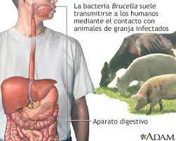

Brucelosis
Descripción

La brucelosis es una enfermedad bacteriana causada por varias especies de Brucella, que infectan principalmente al ganado vacuno, porcino, caprino, ovino y a los perros. Los humanos generalmente contraen la enfermedad por contacto directo con animales infectados, por consumir productos animales contaminados o por inhalar agentes transmitidos por el aire. La mayoría de los casos se producen por la ingestión de leche o queso no pasteurizados de cabras u ovejas infectadas.
Síntomas
- Fiebre
- Sudoración y escalofríos
- Fatiga y debilidad
- Pérdida de apetito
- Dolor muscular y de espalda
Tratamiento
Se recomienda el uso prolongado de antibióticos para asegurar la erradicación completa de la bacteria.